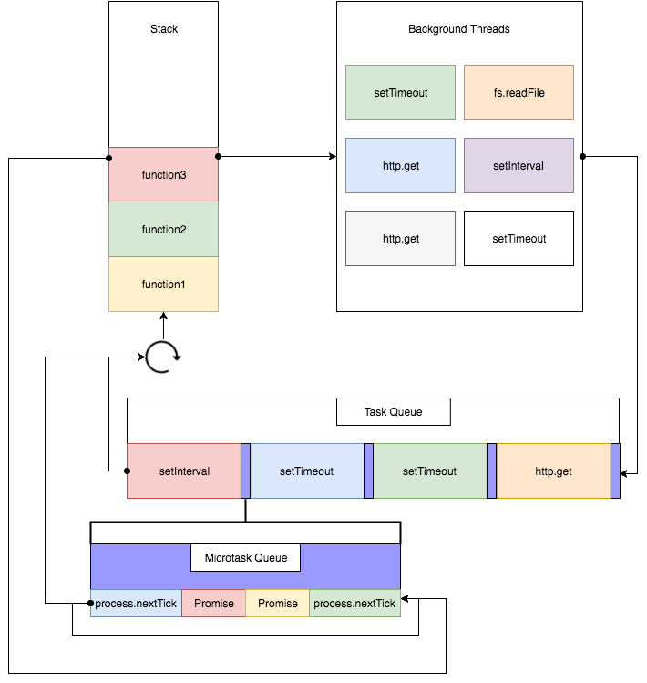
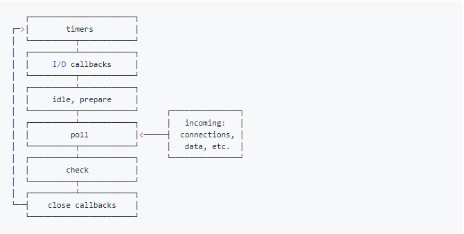
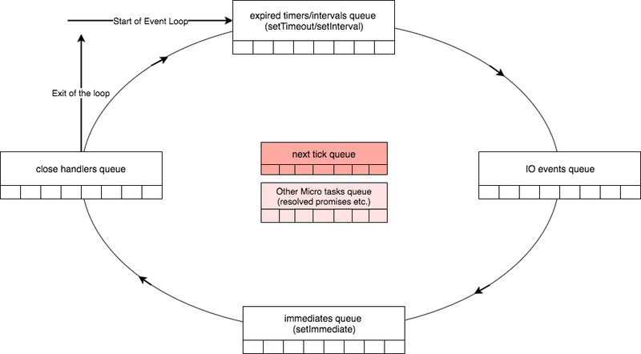
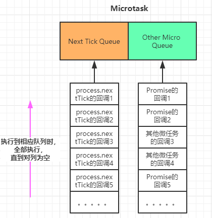
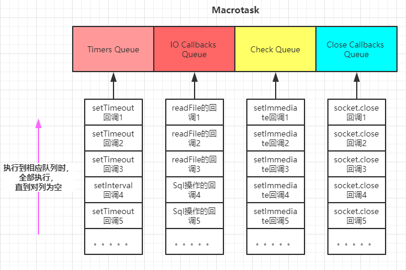

# 什么是 Event Loop
event loop 是一个执行模型，在不同的地方有不同的实现。浏览器和 NodeJS 基于不同的技术实现了各自的 Event Loop。
- 浏览器的 Event Loop 是在 html5 的规范中明确定义。
- NodeJS 的 Event Loop 是基于 libuv 实现的。可以参考 Node 的官方文档以及 libuv 的官方文档。
- libuv 已经对 Event Loop 做出了实现，而 HTML5 规范中只是定义了浏览器中 Event Loop 的模型，具体的实现留给了浏览器厂商。
# 宏队列和微队列
# 宏队列
宏队列，macrotask，也叫 tasks。
一些异步任务的回调会依次进入 macro task queue，等待后续被调用，这些异步任务包括：
- setTimeout
- setInterval
- setImmediate (Node 独有)
- requestAnimationFrame (浏览器独有)
- I/O
- UI rendering (浏览器独有)
# 微队列
微队列，microtask，也叫 jobs。
另一些异步任务的回调会依次进入 micro task queue，等待后续被调用，这些异步任务包括：
- process.nextTick (Node 独有)
- Promise
- Object.observe
- MutationObserver
# 浏览器的 Event Loop

这张图将浏览器的 Event Loop 完整的描述了出来，我来讲执行一个 JavaScript 代码的具体流程：
- 执行全局 Script 同步代码，这些同步代码有一些是同步语句，有一些是异步语句（比如 setTimeout 等）；
- 全局 Script 代码执行完毕后，调用栈 Stack 会清空；
- 从微队列 microtask queue 中取出位于队首的回调任务，放入调用栈 Stack 中执行，执行完后 microtask queue 长度减 1；
- 继续取出位于队首的任务，放入调用栈 Stack 中执行，以此类推，直到直到把 microtask queue 中的所有任务都执行完毕。注意，如果在执行 microtask 的过程中，又产生了 microtask，那么会加入到队列的末尾，也会在这个周期被调用执行；
- microtask queue 中的所有任务都执行完毕，此时 microtask queue 为空队列，调用栈 Stack 也为空；
- 取出宏队列 macrotask queue 中位于队首的任务，放入 Stack 中执行；
- 执行完毕后，调用栈 Stack 为空；
- 重复第 3-7 个步骤；
- 重复第 3-7 个步骤；
- …
可以看到，这就是浏览器的事件循环 Event Loop
这里归纳 3 个重点：
- 宏队列 macrotask 一次只从队列中取一个任务执行，执行完后就去执行微任务队列中的任务；
- 微任务队列中所有的任务都会被依次取出来执行，知道 microtask queue 为空；
- 图中没有画 UI rendering 的节点，因为这个是由浏览器自行判断决定的，但是只要执行 UI rendering，它的节点是在执行完所有的 microtask 之后，下一个 macrotask 之前，紧跟着执行 UI render。
# 例子
# 例 1
1 | console.log(1); |
# 结果
1 | // 正确答案 |
# 例 2
1 | console.log(1); |
# 结果
1 | // 正确答案 |
** 在执行微队列 microtask queue 中任务的时候，如果又产生了 microtask，那么会继续添加到队列的末尾，也会在这个周期执行，直到 microtask queue 为空停止。
**
注：当然如果你在 microtask 中不断的产生 microtask，那么其他宏任务 macrotask 就无法执行了，但是这个操作也不是无限的，拿 NodeJS 中的微任务 process.nextTick () 来说，它的上限是 1000 个，后面我们会讲到。
浏览器的 Event Loop 就说到这里，下面我们看一下 NodeJS 中的 Event Loop，它更复杂一些，机制也不太一样。
# NodeJS 中的 Event Loop
NodeJS 的 Event Loop 中，执行宏队列的回调任务有 6 个阶段，如下图：

各个阶段执行的任务如下：
- timers 阶段：这个阶段执行 setTimeout 和 setInterval 预定的 callback
- I/O callback 阶段：执行除了 close 事件的 callbacks、被 timers 设定的 callbacks、setImmediate () 设定的 callbacks 这些之外的 callbacks
- idle, prepare 阶段：仅 node 内部使用
- poll 阶段：获取新的 I/O 事件，适当的条件下 node 将阻塞在这里
- check 阶段：执行 setImmediate () 设定的 callbacks
- close callbacks 阶段：执行 socket.on (‘close’, …) 这些 callbacks
# NodeJS 中宏队列主要有 4 个
由上面的介绍可以看到，回调事件主要位于 4 个 macrotask queue 中：
- Timers Queue
- IO Callbacks Queue
- Check Queue
- Close Callbacks Queue
这 4 个都属于宏队列，但是在浏览器中，可以认为只有一个宏队列，所有的 macrotask 都会被加到这一个宏队列中，但是在 NodeJS 中，不同的 macrotask 会被放置在不同的宏队列中。
# NodeJS 中微队列主要有 2 个：
- Next Tick Queue：是放置 process.nextTick (callback) 的回调任务的
- Other Micro Queue：放置其他 microtask，比如 Promise 等
在浏览器中，也可以认为只有一个微队列，所有的 microtask 都会被加到这一个微队列中，但是在 NodeJS 中，不同的 microtask 会被放置在不同的微队列中。
具体可以通过下图加深一下理解：

大体解释一下 NodeJS 的 Event Loop 过程：
- 执行全局 Script 的同步代码
- 执行 microtask 微任务，先执行所有 Next Tick Queue 中的所有任务，再执行 Other Microtask Queue 中的所有任务
- 开始执行 macrotask 宏任务，共 6 个阶段，从第 1 个阶段开始执行相应每一个阶段 macrotask 中的所有任务，注意，这里是所有每个阶段宏任务队列的所有任务，在浏览器的 Event Loop 中是只取宏队列的第一个任务出来执行，每一个阶段的 macrotask 任务执行完毕后，开始执行微任务，也就是步骤 2
- Timers Queue -> 步骤 2 -> I/O Queue -> 步骤 2 -> Check Queue -> 步骤 2 -> Close Callback Queue -> 步骤 2 -> Timers Queue …
- 这就是 Node 的 Event Loop
# 关于 NodeJS 的 macrotask queue 和 microtask queue


# 例子
1 | console.log('start'); |
# 结果
1 | // 正确答案 |
# setTimeout 对比 setImmediate
- setTimeout (fn, 0) 在 Timers 阶段执行，并且是在 poll 阶段进行判断是否达到指定的 timer 时间才会执行
- setImmediate (fn) 在 Check 阶段执行
两者的执行顺序要根据当前的执行环境才能确定：
- 如果两者都在主模块 (main module) 调用，那么执行先后取决于进程性能，顺序随机
- 如果两者都不在主模块调用，即在一个 I/O Circle 中调用，那么 setImmediate 的回调永远先执行，因为会先到 Check 阶段
# setImmediate 对比 process.nextTick
- setImmediate (fn) 的回调任务会插入到宏队列 Check Queue 中
- process.nextTick (fn) 的回调任务会插入到微队列 Next Tick Queue 中
- process.nextTick (fn) 调用深度有限制，上限是 1000，而 setImmedaite 则没有
# 总结
- 浏览器的 Event Loop 和 NodeJS 的 Event Loop 是不同的，实现机制也不一样，不要混为一谈。
- 浏览器可以理解成只有 1 个宏任务队列和 1 个微任务队列，先执行全局 Script 代码，执行完同步代码调用栈清空后，从微任务队列中依次取出所有的任务放入调用栈执行，微任务队列清空后，从宏任务队列中只取位于队首的任务放入调用栈执行，注意这里和 Node 的区别，只取一个，然后继续执行微队列中的所有任务，再去宏队列取一个，以此构成事件循环。
- NodeJS 可以理解成有 4 个宏任务队列和 2 个微任务队列，但是执行宏任务时有 6 个阶段。先执行全局 Script 代码，执行完同步代码调用栈清空后，先从微任务队列 Next Tick Queue 中依次取出所有的任务放入调用栈中执行，再从微任务队列 Other Microtask Queue 中依次取出所有的任务放入调用栈中执行。Node 在新版本中，也是每个 Macrotask 执行完后，就去执行 Microtask 了，和浏览器的模型一致。
- MacroTask 包括： setTimeout、setInterval、 setImmediate (Node)、requestAnimation (浏览器)、IO、UI rendering
- Microtask 包括： process.nextTick (Node)、Promise、Object.observe、MutationObserver